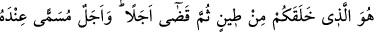
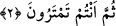

şöyle buyurmuştur: “Allah, inananların dostudur. Onları karanlıklardan aydınlığa
çıkarır.” (el-Bakara, 2/257)
Kimde de beşerî ve hayvânî karanlıklar gâlib olur, nefsin azgınlıklarına tâbi olur ve
dünya şehvetlerinden zevk alma ile oyalanırsa tağut onun dostu olur... Tağut onu ruhânî
sıfatların nurundan çıkarır ve hayvânî sıfatların karanlığına götürür. Nitekim Allah Teâlâ
şöyle buyurmuştur: “Kâfirlerin dostları Tağut’tur. O da onları aydınlıktan
karanlıklara çıkarır. ” (Bakara, 2/257) İşte “Yine de inkârcılar Rab’lerini
(başkalarına) denk tutuyorlar.” âyetinin mânâsı budur. Yani Allah Teâlâ kalplerin
semalarını ve nefislerin arzını yarattıktan, onlarda nefsânî karanlıkları ve ruhânî nûru
var ettikten sonra kafirlerin nefislerine hevâ tâğûtunun sıfatları galip geldiği için ona
ibadet etmişler ve onu Rab’lerine denk tutmuşlardır. et-Te’vilâtü’n-Necmiyye’de böyle
geçmektedir.
Hikaye edilir ki Yemen fakihlerinden bir cemaat bir hususta imtihan etmek niyetiyle
Şeyh Ebu’l-Gays İbn Cemil (k.s.)’i ziyarete gittiler... Huzuruna vardıkları vakit Ebu’l-
Gays onlara; “Kulumun kulları, hoş geldiniz.” dedi.
Bu söz onların çok ağırına gitti ve oradan ayrıldılar. Doğruca iki tarîkatın şeyhi ve iki
grubun imamı olan İsmail b. Muhammed Hadramî (k.s.)’in huzuruna vardılar. Şeyh
Ebu’l-Gays’in kendilerine söylediği sözü haber verdiler. Bunun üzerine Muhammed
Hadramî gülümseyerek şöyle dedi: “Şeyh doğru söylemiş. Siz hevânızın, nefsânî
arzularınızın kulu olmuşsunuz. Hevâ ise onun kölesidir.”
Öyle birinin himmetinin kölesiyim şu gök kubbe altında
Her türlü bağdan, alâkadan kurtulmuş ve âzâde
2. Sizi bir çamurdan yaratan, sonra ölüm zamanını takdir eden ancak O’dur. Bir
de O’nun katında muayyen bir ecel (kıyamet günü) vardır. Siz hâla şüphe
ediyorsunuz.
Ey insanlar, “O” Allah Teâlâ “sizi çamurdan yaratmıştır.” Yani sizin yaratılışınıza
çamuru şekillendirmekle başlamıştır.
Çamur, su ile karıştırılmış olan topraktır. Şu halde o, beşeriyetin aslı olan Adem
(a.s.)’ın menşei olduğu için bütün insanların ilk maddesidir.
Sa’dî der ki : Allah, Cebrail (as)’ı bir miktar toprak almak üzere yeryüzüne
gönderdiği vakit arz ona şöyle dedi: “Senden Allah’a sığınırım, benden bir şey alma!”
Bunun üzerine Cibril bir şey almadan geri döndü.
Celâleddîn Rûmî Mesnevî’sinde şöyle der: